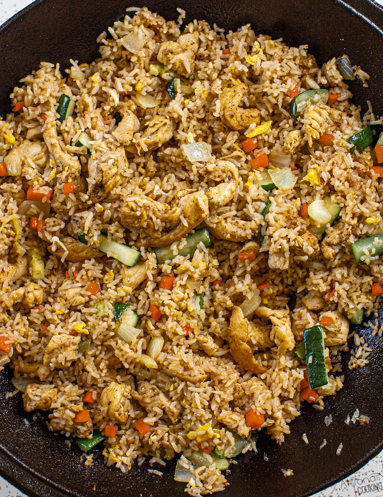

Hibachi Chicken

Description:
This is where I would place a lengthy description about long summers where my family has
sat in the beautiful sunset watching me grill chicken and rice on the Blackstone.
Instead, I am going to just write these two sentences in place of that because I honestly
despise when recipes do that. Maybe I will find out how to use an anchor to include a
"jump to recipe" link?
Ingredients:
-
Raw Chicken Breast
-
Soy Sauce
-
Long-Grain White Rice
-
Frozen Mixed Vegetables
-
Eggs
-
Salt
-
Pepper
-
Onion
-
Garlic
-
Sriracha
Recipe:
-
Brine the chicken breast for a minimum of 25 minutes. Poke holes in the chicken with a
fork and fill a small bowl with soy sauce, salt, pepper, water, and sriracha sauce. No
measurements here, use your gut at all times.
-
While the chicken is brining, put the rice in the rice cooker per your rice cookers
instruction. I usually make a cup plus a pinch. Also chop the garlic and the onion
finely.
-
When the chicken is done brining, fire up the Blackstone and oil it down good. Or use
butter, that is cool too. Place the chicken on the grill and shut the lid.
-
In 5 minutes, flip the chicken and throw on the frozen mixed veggies. After another 1
minute, add the onions and garlic to the mixed veggies pile. When another 4 minutes
have passed, check the chicken temp. for "close" to 165.
-
Add the rice to the mixed veggies pile. toss really well. Cut the chicken into bits right
on the gril. Coat everything in soy sauce and let that bake onto the rice and chicken.
-
Add an egg is you want man. Otherwise pull it off and eat.